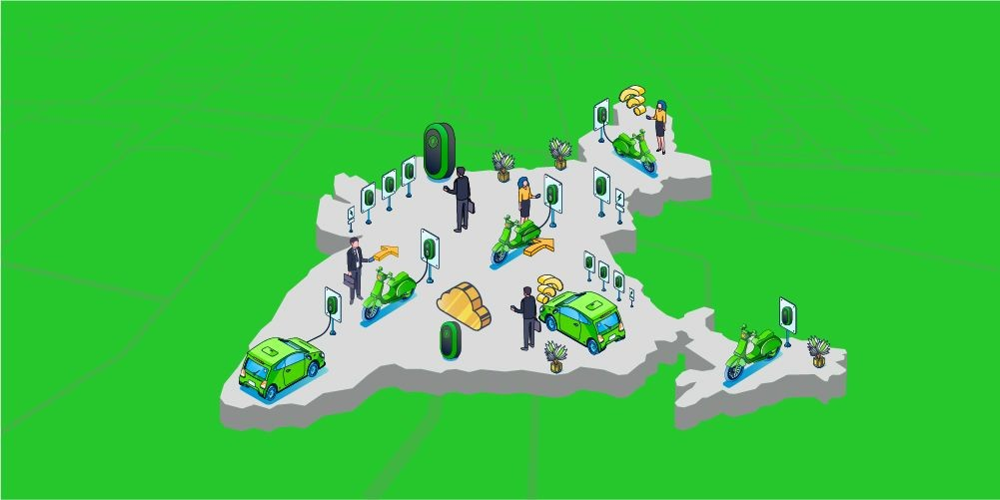
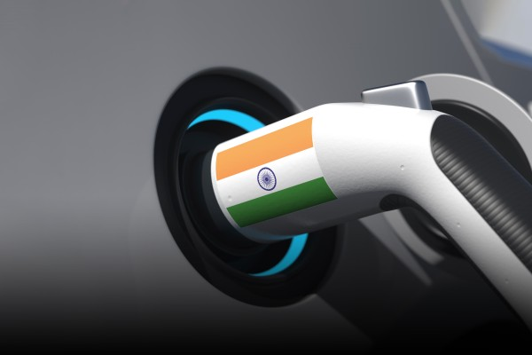
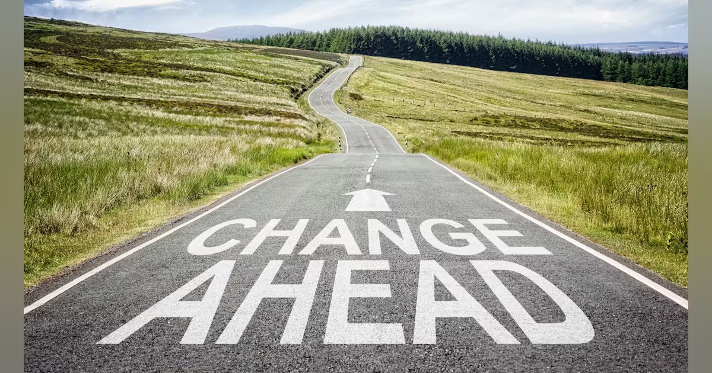

India's shift to electric vehicles (EVs) signifies a major change in its transport scene. The EV ecosystem in India consists of a complex web of crucial participants, innovative technologies, and vital infrastructure. Together, these elements promote the acceptance and expansion of electric mobility nationwide.
This blog examines the different parts of this ecosystem. It highlights the roles of car manufacturers, battery producers, charging infrastructure providers, and the government. Additionally, it looks at the advanced technologies and infrastructure propelling this transformation.
Key Players in the EV Ecosystem
- Automakers: India's automotive industry is witnessing a surge in electric vehicle manufacturing, with companies ranging from established giants to emerging startups entering the EV space. Manufacturers are producing a diverse range of vehicles, including electric two-wheelers, three-wheelers, passenger cars, and commercial vehicles. Companies like Tata Motors, Mahindra Electric, and Hero Electric are leading the charge, offering consumers an array of choices that cater to different needs and price points.
- Battery Manufacturers: The heart of any electric vehicle lies in its battery. In India, battery manufacturing is crucial to the EV ecosystem, with companies focusing on producing advanced lithium-ion batteries and exploring new technologies to improve efficiency and reduce costs. Companies such as Exide Industries and Amara Raja Batteries are at the forefront, working on innovations that enhance battery performance and longevity.
- Charging Infrastructure Providers: The availability of charging stations is a critical factor in the widespread adoption of EVs. In India, a growing number of businesses are investing in the development of public and private charging infrastructure. Companies like Tata Power and ABB are setting up charging points across the country, ensuring that EV owners have easy access to charging facilities, whether at home, at work, or in public spaces.
- Government: The Indian government plays a pivotal role in shaping the EV ecosystem. Through policies, incentives, and regulations, both the central and state governments are promoting the adoption of electric vehicles. Initiatives like the Faster Adoption and Manufacturing of Hybrid and Electric Vehicles (FAME) scheme provide financial incentives to EV buyers and support the development of charging infrastructure. Additionally, state-specific policies offer tax benefits and subsidies, making EVs more affordable for consumers.
- Consumers: The final and most crucial element of the EV ecosystem is the consumers. Individuals and businesses are increasingly embracing electric vehicles due to their environmental benefits, lower operating costs, and the growing availability of EV models. As awareness of the advantages of EVs spreads, consumer demand is expected to rise, further driving the expansion of the EV ecosystem.

Cutting-Edge Technologies Powering the EV Revolution
The success of the EV ecosystem in India depends heavily on the integration of advanced technologies that enhance vehicle performance, safety, and efficiency. Some of the key technologies include:
- Application-Specific Integrated Circuits (ASICs): ASICs are specialized chips designed to perform specific functions within EVs. These circuits are crucial for managing the electronic systems that control power distribution, battery management, and overall vehicle operation, ensuring optimal performance and energy efficiency.
- Embedded AI Solutions: Artificial intelligence is transforming the EV landscape by enabling advanced driver assistance systems (ADAS), predictive maintenance, and intelligent energy management. Embedded AI solutions allow vehicles to make real-time decisions, enhancing safety, reducing downtime, and optimizing energy use.
- Real-Time Operating Systems (RTOS): RTOS is essential for the reliable functioning of embedded systems in electric vehicles. These operating systems ensure that critical tasks are executed promptly, contributing to the overall safety and performance of the vehicle.
- Field-Programmable Gate Arrays (FPGAs): FPGAs offer flexibility in optimizing power electronics components within EVs. These programmable devices can be configured to perform specific functions, such as controlling motor drives and managing energy conversion, making them a valuable asset in developing efficient EV systems.
- Sensor Fusion: Sensor fusion technology combines data from multiple sensors to provide a comprehensive view of the vehicle's surroundings. This technology is vital for improving safety and enabling autonomy in electric vehicles, as it allows for accurate interpretation of real-time data, such as obstacle detection and road conditions.

Infrastructure: The Backbone of the EV Ecosystem
The infrastructure supporting electric vehicles is a crucial component of the EV ecosystem. In India, the development of both public and private charging stations and the integration of renewable energy sources is essential for the sustainable growth of electric mobility.
- Public Charging Stations: The availability of public charging points at strategic locations like malls, offices, and highways is vital for reducing range anxiety and encouraging the adoption of EVs. The Indian government, along with private players, is working to expand the network of public charging stations, ensuring that EV owners can charge their vehicles conveniently during their daily routines.
- Private Charging Stations: Home and workplace charging solutions are also gaining traction in India. Installing private charging stations allows EV owners to charge their vehicles overnight or while at work, providing convenience and peace of mind. Government incentives and the development of affordable and user-friendly charging equipment support this trend.
- Renewable Energy Integration: To ensure that the shift to electric mobility is truly sustainable, India is exploring the integration of renewable energy sources, such as solar and wind power, into the charging infrastructure. Solar-powered charging stations are becoming increasingly popular, offering a green and cost-effective solution for powering electric vehicles while reducing the overall carbon footprint.

Overcoming Challenges: The Road Ahead
Despite the rapid progress in the EV ecosystem, India still faces several challenges that need to be addressed to ensure the widespread adoption of electric vehicles. These challenges include:
- Range Anxiety: The fear of running out of battery power before reaching a charging station remains a significant concern for potential EV buyers. Expanding the charging infrastructure and improving battery technology to extend vehicle range are crucial steps in alleviating this anxiety.
- Charging Accessibility: While the number of charging stations is growing, there is still a need for more widespread and accessible charging options, particularly in rural areas. Ensuring that all regions have access to reliable charging infrastructure is essential for promoting EV adoption across the country.
- High Costs: The initial cost of electric vehicles is often higher than that of traditional internal combustion engine (ICE) vehicles. However, as battery prices decrease and government incentives continue to support EV purchases, the cost gap is expected to narrow, making EVs more affordable for a broader range of consumers.
Conclusion
India's EV ecosystem is a dynamic and rapidly evolving landscape, driven by the collective efforts of key players, technological advancements, and the development of essential infrastructure. As the country continues to embrace electric mobility, the collaboration between automakers, battery manufacturers, charging infrastructure providers, and the government will play a crucial role in overcoming challenges and ensuring the sustainable growth of the EV sector. With ongoing innovations and investments, the future of electric vehicles in India looks promising, paving the way for a cleaner, greener, and more efficient transportation system.